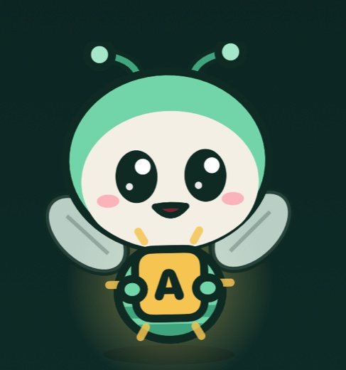
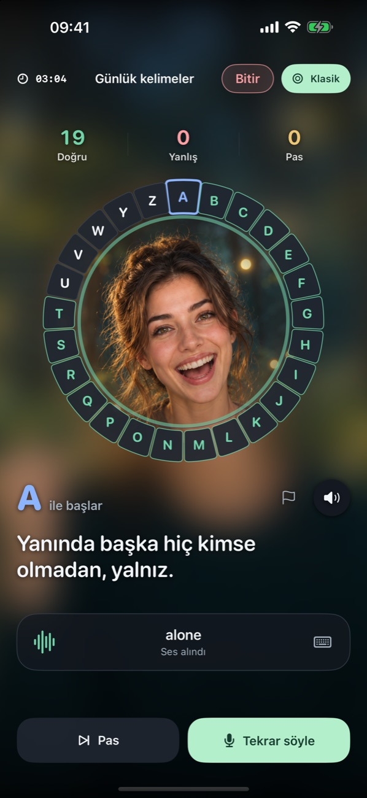
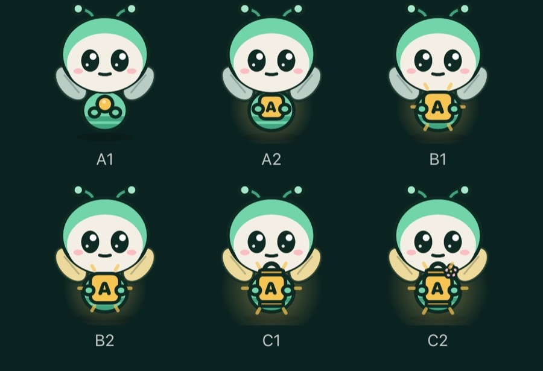

Hazırlan.
Karakterini ya da kameranı seç, mikrofonunu dene. Sesle mi yazarak mı oynayacağına karar ver.
Türkçe ipucunu dinle, İngilizce cevabını söyle ya da yaz. Her doğru kelime bahçene bir filiz eker; ışık arkadaşın da seninle birlikte büyür.


apple elma 🔥 9 gün sulama serisi 🌸 Bugün 10/10 bahçen çiçek açtıHer çemberde 25 harf, her harfte bir Türkçe ipucu. İngilizce cevabı bul, süre dolmadan kaç harfi yeşile çevirebileceğini gör.
Karakterini ya da kameranı seç, mikrofonunu dene. Sesle mi yazarak mı oynayacağına karar ver.

Doğal seslendirilmiş ipucunu dinle. Takıldığında “pas” de; o harf çemberin sonunda yeniden gelir.

Doğru bildiğin harflerden filizler çıkar. Cevaplarını harf harf incele, kaçırdıklarını “Eksikleri oyna” ile hemen tamamla.

Çemberin ortasında kendi yüzün, seçtiğin karakter ya da yüz ifadeni taklit eden hareketli karakter olsun. Saydam modda kameran tüm ekranı kaplar, çember önünde döner.
Altı seviyede 80 çember. Her çemberi tamamladıkça bahçe yolunda bir sonraki açılır.
Sınav kelimelerinden 15 çember, 375 soru. Seviye yok; çemberler sırayla açılır.
2.375 sorunun tamamı doğal bir Türkçe sesle kaydedildi. Kelimelerin İngilizce okunuşunu da dinleyebilirsin.
Karakter, altı renk ve çember stili seç. Halka ve Aralıklı herkese açık; Pullar, Sade ve Petek Plus ile gelir.
İndirdiğin çemberleri internetsiz oyna. Sonuçların bağlantı geldiğinde hesabınla eşitlenir.
Hesap açmadan hemen dene. İstediğinde Apple ile ya da e-postayla hesabını kaydet; ilerlemen korunur.
Seviye etiketleri CEFR-J Wordlist 1.5 (© Tono Laboratory, TUFS) ve Octanove Vocabulary Profile C1–C2 1.0 (Octanove Labs, CC BY-SA 4.0) kelime listelerine dayanır; bir sınav sonucu veya yeterlilik belgesi değildir.


Öğrendiğin her 10 kelime bahçene yeni bir bitki diker, tamamladığın her çember onları çiçeklendirir. Sekiz bitkiyle bahçe dolar ve sıradaki bahçe açılır.
Çayırdan Ay Bahçesi’ne her bahçenin kendi bitkisi ve canlıları var. Tamamladığın bahçeler “Bahçelerim”de çiçek açmış hâliyle kalır.
 Çayırpapatya
Çayırpapatya Lale Bahçesilale
Lale Bahçesilale Ayçiçeği Tarlasıayçiçeği
Ayçiçeği Tarlasıayçiçeği Lavanta Tarlasılavanta
Lavanta Tarlasılavanta Gül Bahçesigül
Gül Bahçesigül Kiraz Bahçesikiraz fidanı
Kiraz Bahçesikiraz fidanı Su Bahçesinilüfer
Su Bahçesinilüfer Sonbahar Korusuakçaağaç fidanı
Sonbahar Korusuakçaağaç fidanı Kış Bahçesikardelen
Kış Bahçesikardelen Ay Bahçesiay çiçeği
Ay Bahçesiay çiçeğiYolculuğuna küçük bir ateş böceği eşlik eder. Ona bir ad ver; seviye atladıkça ışığı büyür, A1’deki ilk kıvılcımdan C2’de çiçek açan bir fenere dönüşür.
Rotanda, bahçende, haftalık raporunda ve widget’ında seni adıyla bekler. Bugün bahçeni sulamadıysan ışığı biraz söner.

Kaçırdığın ve pas geçtiğin kelimeler kendiliğinden Kelimelerim’e eklenir. Aralıklı tekrar, her kelimeyi unutmak üzereyken yeniden karşına çıkarır: Yeni → Öğreniyor → Ustalaştı.


Ayın 1’inde, 11’inde ve 21’inde yeni bir fener yanar. Her ay 18 yeni çember, 450 yeni soru; her turda kendi seviyende yepyeni bir çember seni bekler.

A1 ve A2’nin tamamı, günün tekrarı, Sahne ve sesle cevap her zaman ücretsiz. Daha ileri gitmek istediğinde Plus seni bekler.
Hep açık kalanlar
Aylık ya da yıllık abonelik
Yıllık planda 3 gün ücretsiz deneme vardır. Güncel fiyatlar uygulamada ve App Store’da gösterilir. Ödeme, satın almayı onayladığında Apple hesabından alınır. Abonelik, dönem bitmeden en az 24 saat önce iptal edilmezse kendiliğinden yenilenir; aboneliğini App Store hesap ayarlarından yönetebilir ve iptal edebilirsin. Ayrıntılar kullanım koşullarında.
İngilizce kelime dağarcığını Türkçe ipuçlarıyla geliştirmek ve konuşarak pratik yapmak isteyen herkes için. A1’den C2’ye altı seviye ve YDS rotası, nereden başlarsan başla sana uygun bir çember sunar.
Uygulamayı indirmek ve kullanmak ücretsizdir; reklam yoktur. A1 ve A2’nin tamamı, B1–C2’nin ilk üç çemberi, Sahne, günün tekrarı ve sesle cevap ücretsizdir. B1–C2’nin geri kalanı, YDS rotası ve bazı ek özellikler isteğe bağlı Passalingo Plus aboneliğiyle açılır.
iPhone’unda Ayarlar → adın → Abonelikler bölümünden ya da uygulamada Ayarlar → Passalingo Plus üzerinden aboneliğini yönetebilir ve iptal edebilirsin. İptal, mevcut dönemin sonunda geçerli olur. Telefon değiştirdiysen Ayarlar’daki “Satın alımları geri yükle” ile aboneliğini geri getirebilirsin.
Evet. Giriş ekranındaki “Misafir olarak dene” ile hemen oynamaya başlayabilirsin. Daha sonra Ayarlar → Hesap → Hesabını kaydet ile Apple ya da e-posta ekleyebilirsin; ilerlemen, bahçen ve kullanıcı adın aynı kalır.
Hayır. Her an sesli ve yazılı cevap arasında geçiş yapabilirsin. Yazılı modda mikrofon izni istenmez. Sesli cevaplar iPhone’unda yazıya çevrilir; ses kaydın cihazından çıkmaz.
Kamera tamamen isteğe bağlıdır. Açarsan yüzün çemberin ortasında ya da arkasında görünür veya hareketli karakter yüz ifadeni taklit eder. Görüntü kaydedilmez ve cihazından çıkmaz.
Her ay üç tur vardır: ayın 1’i, 11’i ve 21’i. Her turda seviyene özel yeni bir çember açılır. İlk denemen sıralamaya girer; sonraki denemeler pratik içindir. Sahne herkese ücretsizdir.
Evet. İndirdiğin çemberleri internetsiz oynayabilirsin. Giriş, yeni çember ve ses indirme, Sahne ve ilerlemeni hesabınla eşitleme için internet gerekir.
Passalingo yakında App Store’da. Yayınlandığında indirme bağlantısı bu sayfada yer alacak. Soruların için aşağıdaki formdan bize ulaşabilirsin.
Uygulamada Ayarlar → Hesap → Hesabı sil adımlarını izleyebilirsin. Profilin, ilerlemen, bahçen ve rozetlerin silinir. Hesabı silmek Plus aboneliğini iptal etmez; aboneliği App Store’dan ayrıca iptal etmen gerekir. Ayrıntılar gizlilik politikamızda.
Uygulamayla ilgili bir sorun, abonelik sorusu ya da önerin mi var?
Bize yaz, en kısa sürede dönelim.